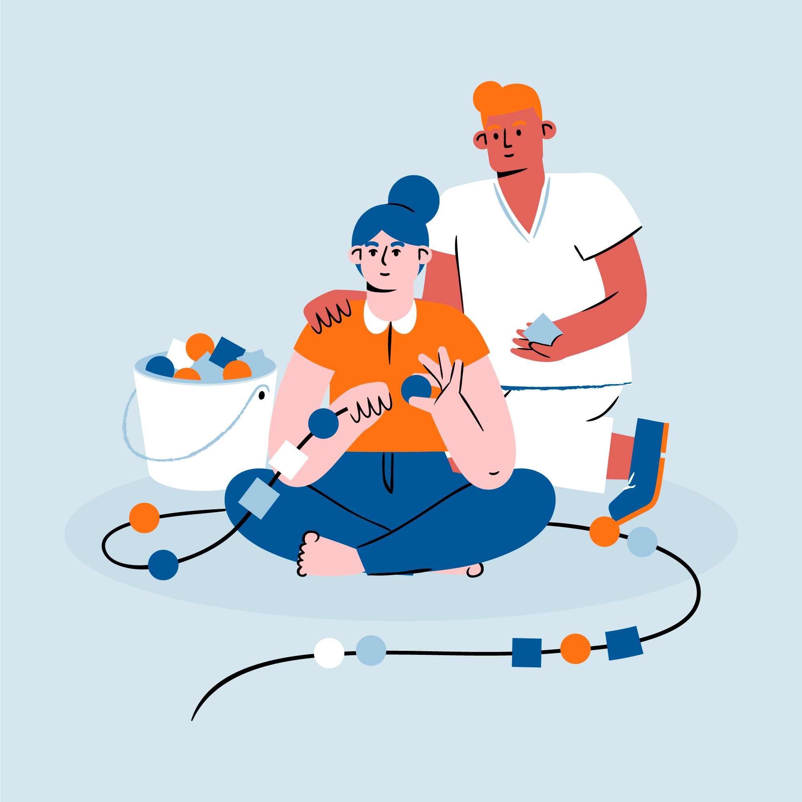
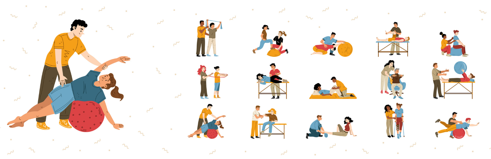
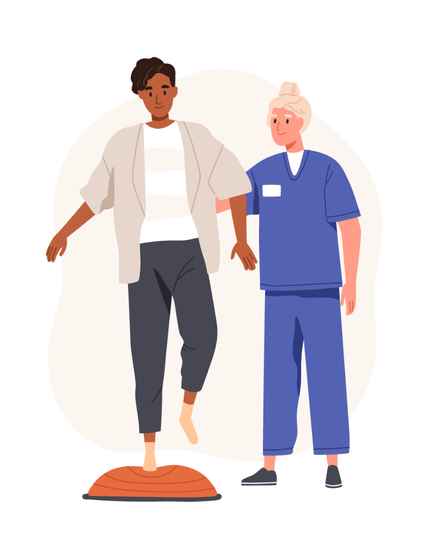
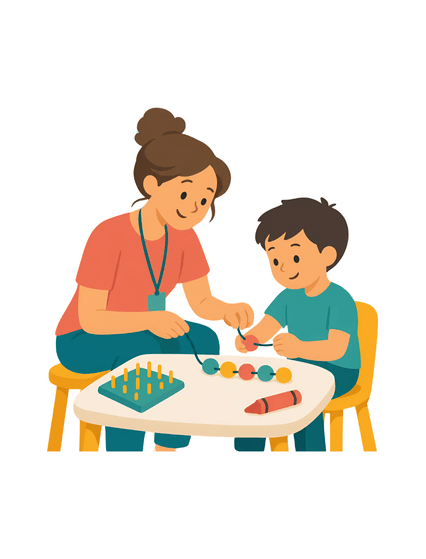
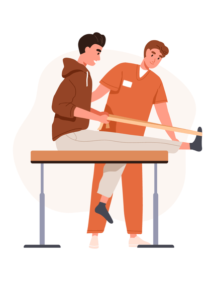

Comprendre le quotidien
On prend le temps d’observer ce qui est facile, ce qui coince et ce qui compte pour la personne et ses proches.
Ergothérapeute à Enveitg
J’accompagne les enfants et les adultes en situation de handicap pour les aider à trouver des repères et à gagner en autonomie, au quotidien et à leur rythme.
Parlons de vos besoins
À quoi ça sert ?
Quand certaines activités du quotidien sont difficiles, l’ergothérapeute cherche avec la personne et son entourage des solutions adaptées à ses envies et à ses capacités.

On prend le temps d’observer ce qui est facile, ce qui coince et ce qui compte pour la personne et ses proches.
Avec des activités concrètes, chacun explore des gestes, des outils et des stratégies qui lui conviennent.
Les solutions se construisent pas à pas, en lien avec l’entourage et les lieux de vie de chacun.
Conseils & articles
Quelques repères autour de l’autonomie, des activités et des adaptations possibles. Sélectionnez un article pour le lire.

Au quotidienDes pistes simples pour aider chacun à prendre part aux activités de tous les jours.
Lire l’article
Enfants & écoleComment réfléchir aux gestes et aux outils qui facilitent la participation en classe.
Lire l’article
AdultesLe quotidien, les loisirs ou le travail peuvent évoluer avec des aménagements choisis ensemble.
Lire l’articleRestons en contact
Une question ou l’envie d’échanger sur vos besoins ou ceux d’un proche ? Contactez-moi.